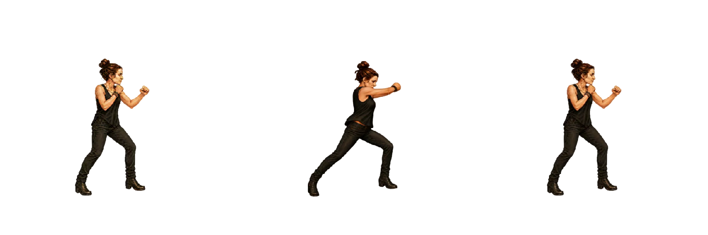
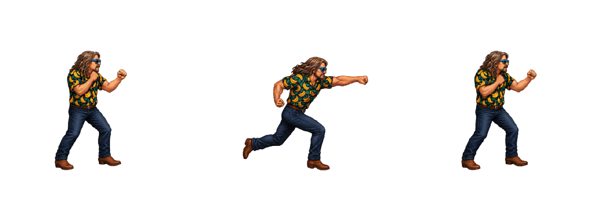
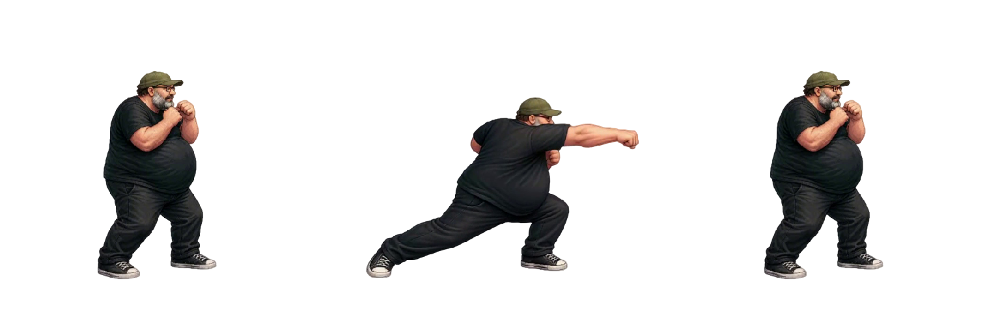
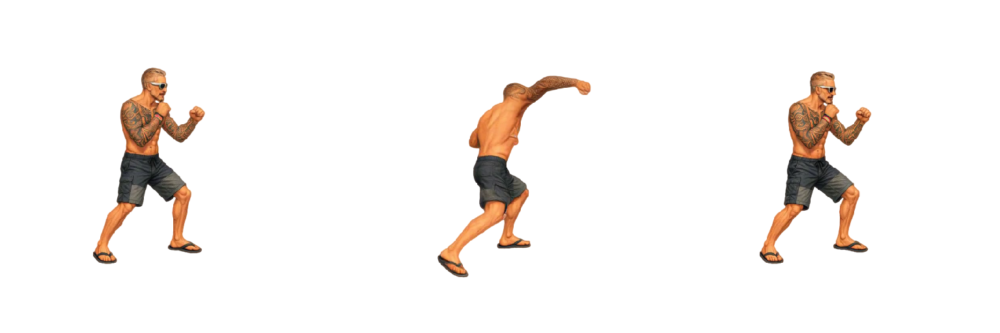
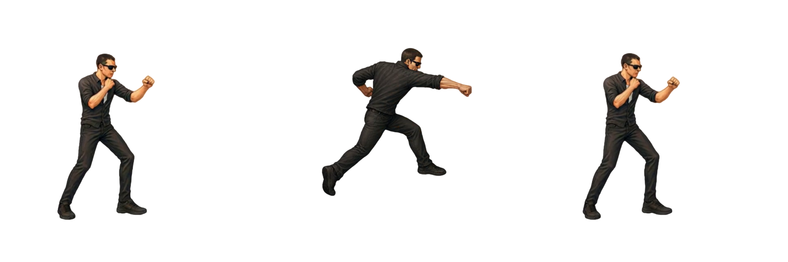
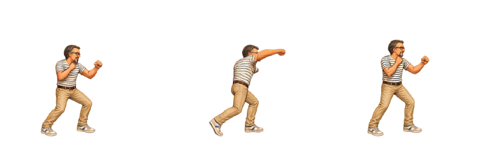
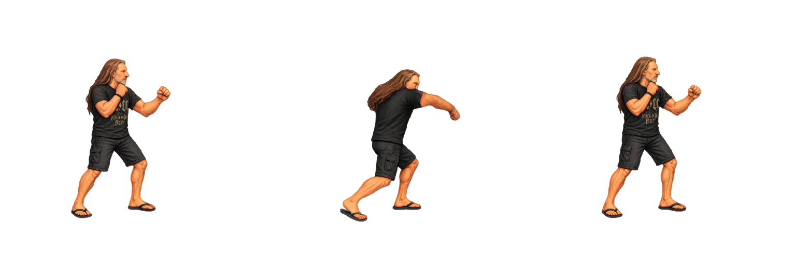

Timing Pugno pesante
Tutti i sette personaggi eseguono la sequenza in 1000 ms (1 s) a velocità 1×. La massima estensione inizia a 500 ms (0,5 s). I frame prima dell’estensione dividono 500 ms; quelli successivi dividono i restanti 500 ms. L’idle finale è una posa terminale a 1000 ms e non aggiunge durata. Gli FPS indicati sono la media del ciclo.
Le pose mostrano ingresso, massima estensione e idle finale. Il frame di estensione inizia a 500 ms; la posa finale viene raggiunta esattamente a 1000 ms, senza aggiungere una pausa al ciclo. Con Loop si riparte dal primo frame; disattivandolo resta visibile la posa finale. Mangler usa heavy_punch da moves/00-heavy_punch_high.png: 49 frame e recupero parziale inverso 40-20. La transizione allo stato idle di Godot viene rappresentata con la posa iniziale al termine, senza durata aggiuntiva. Il pugno arriva al bordo destro del PNG originale: nessun ulteriore ritaglio viene applicato dalla demo.
Frame, pixel, proporzioni in centimetri e correzioni Godot sono conservati. “Riproduci tutte” riallinea anche i cicli successivi e i caricamenti progressivi; a 0,5× dura 2 s, a 2× dura 0,5 s. I timing Godot originali restano nel manifest.
Per Bue, Mileto, Oscare, Peirò e Torpe viene letto esattamente il campo strong_punch_sheet delle scene Godot, distinto da jump_strong_punch_sheet. Le pose sono quelle del pugno pesante a terra.
Scarica CSV · Configurazione timing
| Personaggio | Ingresso / estensione / fine | Frame | Durata | Massima estensione | FPS medi demo | FPS Godot | Note |
|---|---|---|---|---|---|---|---|
| Arianna |  Frame 1 / 24 / 49 | 49 | 1000 ms | 500 msFrame 24 (indice 23) | 49 | 48 | Sequenza completa Godot, con ritorno già presente nello spritesheet. |
| Bue |  Frame 1 / 16 / 21 | 21 | 1000 ms | 500 msFrame 16 (indice 15) | 21 | 24 | Sequenza completa Godot, con ritorno già presente nello spritesheet. |
| Mangler |  Frame 1 / 41 / 71 | 71 | 1000 ms | 500 msFrame 41 (indice 40) | 71 | 48 | Mangler: 49 frame + recupero Godot 40-20 (70 frame), poi posa idle terminale. Scala 0.85. |
| Mileto |  Frame 1 / 17 / 38 | 38 | 1000 ms | 500 msFrame 17 (indice 16) | 38 | 30 | Sequenza completa Godot, con ritorno già presente nello spritesheet. |
| Oscare |  Frame 1 / 16 / 28 | 28 | 1000 ms | 500 msFrame 16 (indice 15) | 28 | 30 | Sequenza completa Godot, con ritorno già presente nello spritesheet. |
| Peirò |  Frame 1 / 11 / 25 | 25 | 1000 ms | 500 msFrame 11 (indice 10) | 25 | 24 | Sequenza completa Godot, con ritorno già presente nello spritesheet. |
| Torpe |  Frame 1 / 16 / 31 | 31 | 1000 ms | 500 msFrame 16 (indice 15) | 31 | 30 | Sequenza completa Godot, con ritorno già presente nello spritesheet. |